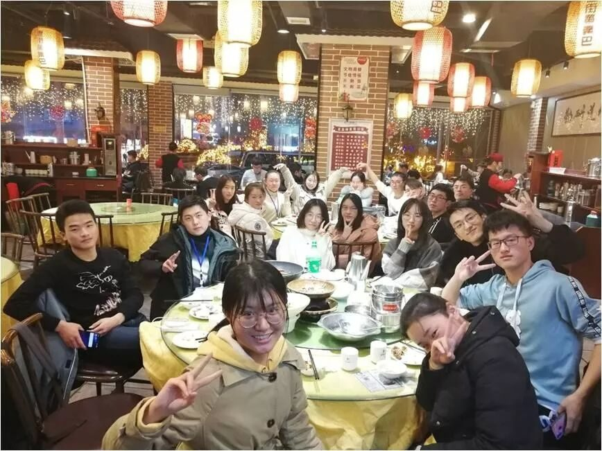
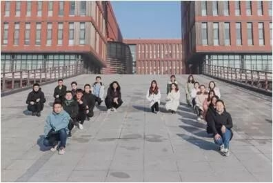
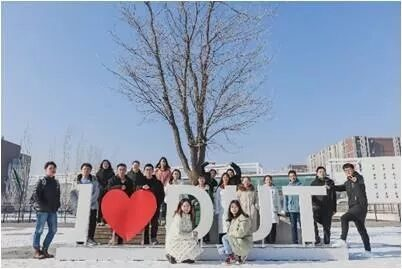
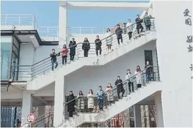
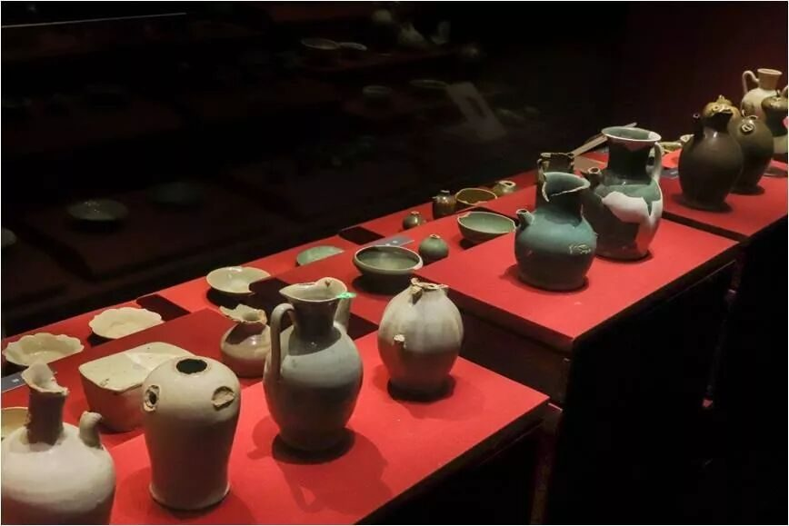
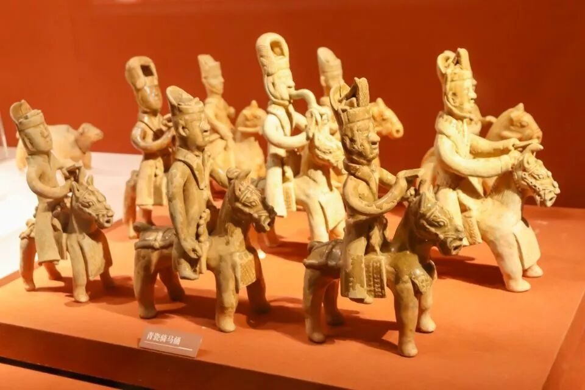
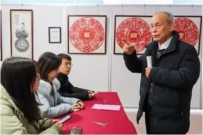

【赋墨沉湘·九】文化苦旅观千百，纵览底蕴于一心


文化苦旅观千百
纵览底蕴于一心
陌生而新鲜的启程
陌生的队友，陌生的城市，陌生的文化，却又如伊甸苹果般散发着诱人的味道。带着对未知事物的焦虑和不安，我踏上了这趟驶向湖湘文化的陌生列车。




借现代之巧，展传统底蕴
文化，绝不是居高临下的，高傲的文化，终将香消玉殒。
无论是湘绣现代产品与传统手艺的结合，还是铜官窑博物馆里借助现代手段展现传统文物，都体现了古与今的融合，文化只有适应了当今的发展潮流，融会贯通，才有可能焕发出新的生机。


商业化与传统坚守
钱财和传统，似乎存在着冲突。
该不为名为利一直孤高地坚守吗？
华夏剪纸博物馆内，祖孙三代坚持不懈，将毕生奉献给剪纸艺术。接待我们时的热情，展示展品时的自豪，都深深地打动了我。但是，其中一些剪纸由于保管问题而褪色，让人扼腕叹息。
该图名图利将文化商业化吗？
湘绣研究所内，一幅幅湘绣都明码标价，工作人员的讲解也透露着商业气息。可也正因如此，无数的80后、90后愿意投身于这项事业中，成为传承者，也正因如此，湘绣才有了与世界接轨的机会，有的学校甚至开设了专门的湘绣专业。
该如何把握好两者的“度”，让文化得以传承又不失风骨，也是我们该探讨的问题。


文化感人，团队更之
半个月的前期准备、7天的旅途、5天的调研、日均两万的步数、近10个文化调研地点的走访、数百小时的工作，让我深深地感受到这个团队的凝聚力。
“社会实践不就是打着调研的名义的旅游团吗？”这是我们调研途中遇到另一个大学学生的看法。
“我们做调研不仅仅是为了自己，更是为了告诉那些一直默默坚守的人还有人在认真地做文化调研这件事。”这是队长随口提到的一句话。
在追名逐利的潮流下慢下脚步，不为利益用心做一件事，多么令人敬佩。我很幸运，能成为这个团队的一员，感受这个团队的“纯粹”。这才是调研，这才是文化苦旅。
来源 | 行者无疆实践团
文字 | 王是
排版 | 吕丰元
审核 | 段智然 康艳虎 黄玲
行者无疆实践团
QQ：2758025831

随行者一起认识世界
长按二维码